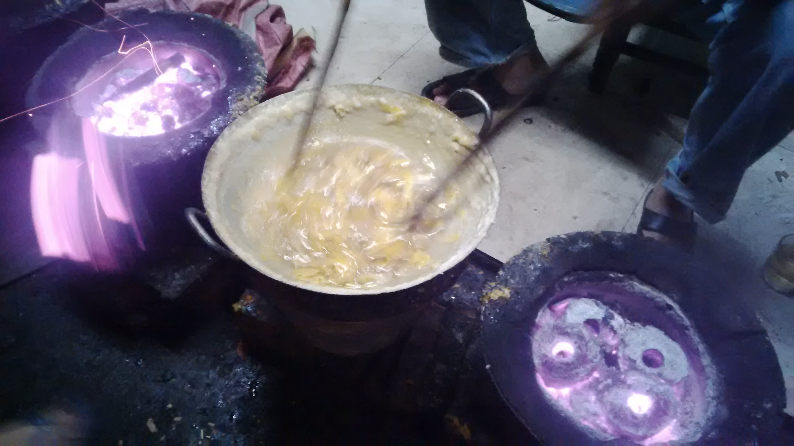

Ánh đèn vàng, hắt ra từ từng chiếc đèn gắn ngang dãy giường tầng. Góc phòng có một chiếc bàn chung, trên có treo vài bức tranh vẽ, màu đỏ đậm, có khuôn mặt hình tam giác, đứng ngửa lên phía trời - tôi nhìn chằm chằm vẫn không hiểu người vẽ nghĩ gì. Đưa mắt một lượt theo đoạn giao giữa hai màu đỏ trắng sơn tường, tôi tự hỏi: “Sao giường không có người nằm mà để điện chi vậy? Hay người ta còn chưa tới.”
Tới thành phố này, hồi chiều nay, ngay từ khi còn bên ngoại thành, ngoài quốc lộ, những giọng nói nhẹ nhàng mà mềm mại, êm êm ấm áp đã thấm dần dần vào ký ức, bên những âm thanh pha tạp và bụi đường dài. Những giọng nói ấy, mỗi lúc một dầy, là lúc tôi biết mình đang tiến dần đến trung tâm phố. Chiếu xuống, trời lạnh, mọi thứ trở nên nhàn nhạt, ảm đạm, giữa thành phố này, mọi thứ đều chầm chậm, tôi đã bắt đầu mường tượng về một buổi tối Giáng Sinh ở một mình, với tầng tầng lớp lớp cô đơn đang ùa đến như gió lạnh. Chạy xe khắp một vòng thành phố, định tìm một chỗ trú chân, vào đêm. Tới khu này ngay gần sông Hương, Trường Tiền, người ngoại quốc còn nhiều hơn người Việt, la liệt hàng quán vải vóc, lưu niệm, quầy thuốc lá… Tôi chợt nghĩ về một chỗ trọ chung. Đâu đó, sẽ có những kẻ lông bông giống mình, có lẽ đêm nay, sẽ có người cùng lang thang. Khắp con phố này, đơn vị đã chuyển hết sang tiền Mỹ, mọi đơn giá tôi đều phải làm phép tính nhân, rồi lại lấy cái mức tiền Việt mà mình sẵn sàng trả, chia ra, tìm một cái bảng có mức giá phù hợp. Rồi chọn bảng tiền số 5$, nơi một chỗ trọ cùng chung.

Nằm ngửa mặt trên giường, phía trên là cái sạp giường tầng, bên mép có ga trải màu trắng, tôi tự hỏi tối nay mình làm gì. Mà mình ở đây làm gì. Lẽ ra đêm nay đang ở Hội An xem giáng sinh với đám bạn. Mải chơi quá, đi chậm hôm nay mới tới chỗ này. Sẽ ở lại đây bao lâu nhỉ. Sao chiều tối rồi cái phòng trọ này, vẫn chẳng có ai, còn nhiều chỗ trống lắm mà. Cả cái nhà này, không lẽ có một mình mình thuê phòng thôi sao. Trời mưa đến giờ chưa tạnh. Nhớ hồi chiều ăn xong, chạy xe lòng vòng, qua bao đường phố, gặp mưa, ngồi quán cà phê ở lầu, nhìn xa xa thành phố, cái suy nghĩ “thành phố này mưa buồn ghê gớm” ngấm dần vào người, như bị ngấm nước mưa, đã vậy còn chẳng một ai quen.
Tôi quyết định mặc hết áo ấm, khoác theo chiếc áo mưa to sụ như một chiếc áo choàng, bỏ lại căn phòng đầy giường trống. Đi lang thang ngoài phố. Lúc ngang qua sảnh, cô gái cho tôi tấm bản đồ - chỉ nơi ăn uống, hồi chiều, làm ở đây, hỏi tôi “Trời mưa đó, anh tính đi đâu”. Bước ra tới gần cửa, tôi tính quay lại bảo “Hay là em đóng cửa, đi cùng anh…”, nhưng không, vì đã có người khách bước vào. Trùm nốt chiếc mũ áo choàng mưa, kín mít đầu cho ấm, tôi bật nhạc, áp tai nghe, rồi quyết định đêm nay tận hưởng… cái một mình.
(Bản nháp viết dở dang ngày 20/5/19)